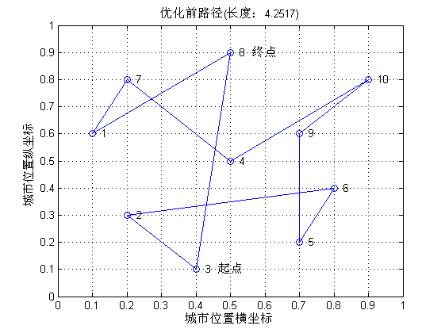

连续Hopfield神经网络的优化—旅行商问题优化计算
| 该案例作者申明： |
| 1：本人长期驻扎在此板块里，对该案例提问，做到有问必答。本套书籍官方网站为：video.ourmatlab.com |
| 2：点此从当当预定本书：《Matlab神经网络30个案例分析》。 |
3：此案例有配套的教学视频，视频下载方式video.ourmatlab.com/vbuy.html。 |
| 4：此案例为原创案例，转载请注明出处（《Matlab神经网络30个案例分析》）。 |
| 5：若此案例碰巧与您的研究有关联，我们欢迎您提意见，要求等，我们考虑后可以加在案例里。 |
Contents
清空环境变量、定义全局变量
clear all clc global A D
导入城市位置
load city_location
计算相互城市间距离
distance = dist(citys,citys');
初始化网络
N = size(citys,1); A = 200; D = 100; U0 = 0.1; step = 0.0001; delta = 2 * rand(N,N) - 1; U = U0 * log(N-1) + delta; V = (1 + tansig(U/U0))/2; iter_num = 10000; E = zeros(1,iter_num);
寻优迭代
for k = 1:iter_num % 动态方程计算 dU = diff_u(V,distance); % 输入神经元状态更新 U = U + dU*step; % 输出神经元状态更新 V = (1 + tansig(U/U0))/2; % 能量函数计算 e = energy(V,distance); E(k) = e; end
判断路径有效性
[rows,cols] = size(V); V1 = zeros(rows,cols); [V_max,V_ind] = max(V); for j = 1:cols V1(V_ind(j),j) = 1; end C = sum(V1,1); R = sum(V1,2); flag = isequal(C,ones(1,N)) & isequal(R',ones(1,N));
结果显示
if flag == 1 % 计算初始路径长度 sort_rand = randperm(N); citys_rand = citys(sort_rand,:); Length_init = dist(citys_rand(1,:),citys_rand(end,:)'); for i = 2:size(citys_rand,1) Length_init = Length_init+dist(citys_rand(i-1,:),citys_rand(i,:)'); end % 绘制初始路径 figure(1) plot([citys_rand(:,1);citys_rand(1,1)],[citys_rand(:,2);citys_rand(1,2)],'o-') for i = 1:length(citys) text(citys(i,1),citys(i,2),[' ' num2str(i)]) end text(citys_rand(1,1),citys_rand(1,2),[' 起点' ]) text(citys_rand(end,1),citys_rand(end,2),[' 终点' ]) title(['优化前路径(长度：' num2str(Length_init) ')']) axis([0 1 0 1]) grid on xlabel('城市位置横坐标') ylabel('城市位置纵坐标') % 计算最优路径长度 [V1_max,V1_ind] = max(V1); citys_end = citys(V1_ind,:); Length_end = dist(citys_end(1,:),citys_end(end,:)'); for i = 2:size(citys_end,1) Length_end = Length_end+dist(citys_end(i-1,:),citys_end(i,:)'); end disp('最优路径矩阵');V1 % 绘制最优路径 figure(2) plot([citys_end(:,1);citys_end(1,1)],... [citys_end(:,2);citys_end(1,2)],'o-') for i = 1:length(citys) text(citys(i,1),citys(i,2),[' ' num2str(i)]) end text(citys_end(1,1),citys_end(1,2),[' 起点' ]) text(citys_end(end,1),citys_end(end,2),[' 终点' ]) title(['优化后路径(长度：' num2str(Length_end) ')']) axis([0 1 0 1]) grid on xlabel('城市位置横坐标') ylabel('城市位置纵坐标') % 绘制能量函数变化曲线 figure(3) plot(1:iter_num,E); ylim([0 2000]) title(['能量函数变化曲线(最优能量：' num2str(E(end)) ')']); xlabel('迭代次数'); ylabel('能量函数'); else disp('寻优路径无效'); end web browser http://www.matlabsky.com/thread-11156-1-2.html
最优路径矩阵
V1 =
0 0 0 0 0 0 1 0 0 0
0 0 0 0 0 1 0 0 0 0
0 0 0 0 1 0 0 0 0 0
1 0 0 0 0 0 0 0 0 0
0 0 0 1 0 0 0 0 0 0
0 0 1 0 0 0 0 0 0 0
0 0 0 0 0 0 0 1 0 0
0 0 0 0 0 0 0 0 1 0
0 1 0 0 0 0 0 0 0 0
0 0 0 0 0 0 0 0 0 1
 

相关论坛： 《Matlab神经网络30个案例分析》官方网站：video.ourmatlab.com Matlab技术论坛：www.matlabsky.com Matlab函数百科：www.mfun.la Matlab中文论坛：www.ilovematlab.com |